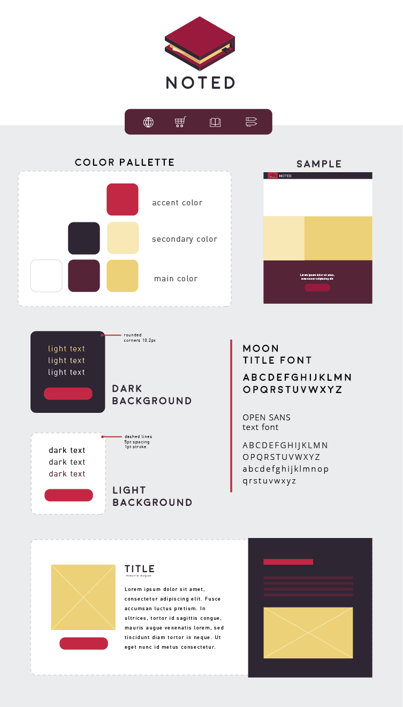

Noted is a fictional e-commerce site dedicated to selling unique notebooks at an affordable price. In this project, I got to use my web-design skills and implement it myself, coding the site in html and css. Working
in a group of two, I was in charge of the design and idea of the site, as well as a majority of the coding. I learned a lot working on this, exploring new features such as flexbox, using sass and animations, and
creating responsive websites, not to mention the use of github (and learning how great a repository can be!).
Before any of the coding started and before I teamed up, I needed to have an idea for an e-commerce site. With a Notebook online store in mind, I came up with a general styleguide that would help define the color scheme, font choices,
and general styling the site would be going for.

branding styleguide made in illustrator
USERFLOW & WIREFRAMING
After looking through both my partners and my own styleguide, we decided to follow through with the one I created. With the design guide planned, the next step was creating wireframes of the user flow.
branding styleguide made in illustrator
MAKING GRAPHICS
With the wireframes ready to go, next up was finding images and making the graphics for the site. Using illustrator, I was able to create newsletter images, general graphics and icons for our company.
some illustrator graphics for site
CHALLENGES
Unfortunately for me, HTML and CSS was still fairly new to me, and this meant I had a huge learning curve before I could create the flow and the site I really wanted. Github and using repositories was also another new element to consider
(one that I am so glad to be able to have access to). Due to the time constraint and my inexperience, this meant I had to scale down the project requirements in order to give me room to learn. On the bright side, and through the
use of the lovely internet, I was able to get a grasp on flexbox, make things responsive/scalable and how to implement finer css details into our site!
desktop version(left) and mobile version(right)
REFLECTION
I learned a lot about HTML/CSS and website building in this project, both in terms of the technical skill, and learning how to make a better user experience over-all for the user by making sure the userflow was straight forward and
had things like breadcrumbs, interaction feedback and mobile compatibility. After this, I found myself looking forward to the next project--my website! (as you can see here!) This was a great base for me to start from and as you
can see, my profile now also includes use of Javascript, flexbox, animations and an accumulation of knowledge and more that I gained from working on this project.